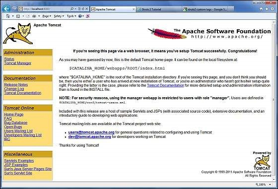

System Requirement¶
FLEX requires JDK 1.4 or higher, so the very first requirement is to have JDK installed in your machine.
JDK |
1.4 Or above. |
Memory |
No minimum requirement. |
Disk Space |
No minimum requirement. |
Operating System |
No minimum requirement. |
Follow the given steps to setup your environment to start with Flex application development.
Step 1 - Verify Java installation on your machine¶
Now open the console and execute the following java command.
OS |
Task |
Command |
|---|---|---|
Windows |
Open Command Console |
c:> java -version |
Linux |
Open Command Terminal |
$ java -version |
Mac |
Open Terminal |
machine:~ joseph$ java -version |
Let’s verify the output for all the operating systems −
Step 2 - Setup Java Development Kit (JDK)¶
If you do not have Java installed, then you can install the Java Software Development Kit (SDK) from Oracle’s Java site Java SE Downloads. You will find instructions for installing JDK in downloaded files, then follow the given instructions to install and configure the setup. Finally set PATH and JAVA_HOME environment variables to refer to the directory that contains java and javac, typically java_install_dir/bin and java_install_dir respectively.
Set the JAVA_HOME environment variable to point to the base directory location where Java is installed on your machine. For example −
OS |
Output |
|---|---|
Windows |
Set the environment variable JAVA_HOME to C:Program FilesJavajdk1.6.0_21 |
Linux |
export JAVA_HOME=/usr/local/java-current |
Mac |
export JAVA_HOME=/Library/Java/Home |
Append the Java compiler location to the System Path.
OS |
Output |
|---|---|
Windows |
Append the string ;%JAVA_HOME%bin to the end of the system variable, Path. |
Linux |
export PATH=$PATH:$JAVA_HOME/bin/ |
Mac |
not required |
Step 3 - Setup Adobe Flash Builder 4.5¶
All the examples in this tutorial has been written using Adobe Flash Builder 4.5 Profession IDE Trial Version. Hence, suggest you to have latest version of Adobe Flash Builder installed on your machine. Also, check compatibility of operating system.
To install Adobe Flash Builder IDE, download the latest Adobe Flash Builder binaries from https://www.adobe.com/in/products/flash-builder.html. Once you downloaded the installation, unpack the binary distribution into a convenient location. For example, in C:flash-builder on windows, or /usr/local/flash-builder on Linux/Unix and finally set PATH variable appropriately.
Flash Builder will start, when you execute the following commands on windows machine, or when you can simply double click on FlashBuilder.exe
%C:flash-builderFlashBuilder.exe
Flash Builder can be started by executing the following commands on Unix (Solaris, Linux, etc.) machine −
$/usr/local/flash-builder/FlashBuilder
Adobe Flash Builder Trial Version can be used for 60 days. Just accept the terms and conditions, and skip the initial registration steps to continue with the IDE. For our understanding, we’re using the trial version for teaching purpose.
After a successful startup, if everything is fine then it should display the following result −
Adobe Flash Builder comes pre-configured with FLEX SDKs. We’re using FLEX SDK 4.5 in our examples which come bundled with Adobe Flash Builder 4.5.
Step 4 – Setup Apache Tomcat¶
You can download the latest version of Tomcat from https://tomcat.apache.org/. Once, you downloaded the installation, unpack the binary distribution into a convenient location. For example, in C:apache-tomcat-6.0.33 on windows, or /usr/local/apache-tomcat-6.0.33 on Linux/Unix and set CATALINA_HOME environment variable pointing to the installation locations.
Tomcat can be started by executing the following commands on windows machine, or you can simply double click on startup.bat:
%CATALINA_HOME%\bin\startup.bat
or
C:\apache-tomcat-6.0.33\bin\startup.bat
Tomcat can be started by executing the following commands on UNIX (Solaris, Linux, etc.) machine −:
$CATALINA_HOME/bin/startup.sh
Or
/usr/local/apache-tomcat-6.0.33/bin/startup.sh
After a successful startup, the default web applications included with Tomcat will be available by visiting http://localhost:8080/. If everything is fine, then it should display the following result −
Further information about configuring and running Tomcat can be found in the documentation included here, as well as on the Tomcat web site: http://tomcat.apache.org
Tomcat can be stopped by executing the following commands on windows machine −
`console
%CATALINA_HOME%\bin\shutdown
Or
C:\apache-tomcat-5.5.29\bin\shutdown
`
Tomcat can be stopped by executing the following commands on UNIX (Solaris, Linux, etc.) machine −
`console
$CATALINA_HOME/bin/shutdown.sh
Or
/usr/local/apache-tomcat-5.5.29/bin/shutdown.sh
`